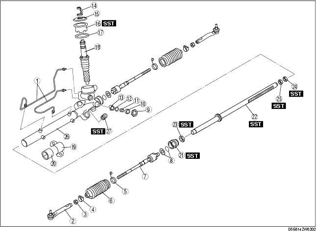
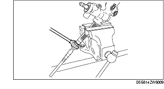
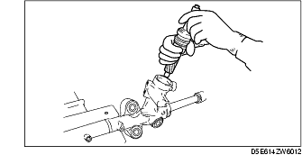
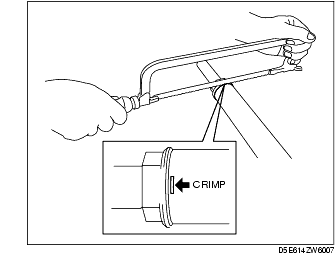
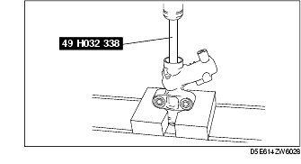
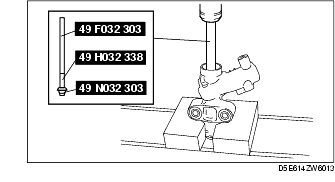
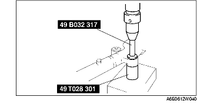

Workshop Manual ➭ STEERING ➭ POWER STEERING ➭ STEERING GEAR AND LINKAGE DISASSEMBLY
STEERING GEAR AND LINKAGE DISASSEMBLY
id061400801000
• Place copper plates, rag, or similar material in a vise, when securing the mounting bracket portion of the steering gear.

|
Tie rod (See Tie Rod Disassembly Note.) |
|
|
Pinion plug (See Pinion Plug, Pinion Shaft Component Disassembly Note.) |
|
|
Pinion shaft component (See Pinion Plug, Pinion Shaft Component Disassembly Note.) |
|
|
Holder (See Holder Disassembly Note.) |
|
|
Steering rack (See Steering Rack, Oil Seal (Holder Side) Disassembly Note.) |
|
|
Oil seal (holder side) (See Steering Rack, Oil Seal (Holder Side) Disassembly Note.) |
|
|
Inner guide (See Oil Seal (Gear Housing Side), Inner Guide Disassembly Note.) |
|
|
Oil seal (gear housing side) (See Oil Seal (Gear Housing Side), Inner Guide Disassembly Note.) |
|
|
Mounting rubber (See Mounting Rubber Disassembly Note.) |
Tie Rod Disassembly Note

Pinion Plug, Pinion Shaft Component Disassembly Note


Holder Disassembly Note


Steering Rack, Oil Seal (Holder Side) Disassembly Note

Oil Seal (Gear Housing Side), Inner Guide Disassembly Note

Mounting Rubber Disassembly Note
• Press the mounting rubber out from the gear housing using the SSTs and a press.
